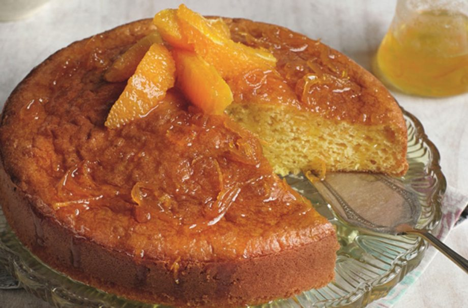

Slimming World’s Spanish orange cake recipe

Serves:
Cost:
Prep:
Cooking:
Skill:
10
Cheap
20 Min
40 Min
Easy
Slimming World’s Spanish orange cake is zesty and moist with a soft sponge – you won’t believe it’s guilt-free! The whole family will love this easy orange cake, which serves 10. It takes around an hour to prepare and bake the orange sponge, plus cooling time. If you’d like to give this cake a twist, why not swap the orange in this recipe for fresh lemon and lemon juice instead? Oranges are everywhere in Spain and in many towns, you’ll see orange trees lining the streets, especially in southern cities like Seville. With a slice of this cake, you can close your eyes and be transported on holiday!
Ingredients
-
low calorie cooking spray
- 5tbsp sweetener5tbsp sweetener
- 2tbsp finely grated orange zest
- Juice of 2 oranges, plus orange segments to decorate
- 1 level tsp baking powder
For The Syrup:
- 120ml freshly squeezed orange juice
Method
- Preheat the oven to 180C, gas 4. Line a 20cm loose-bottomed sandwich tin with non-stick baking parchment and spray with a little low calorie cooking spray.
- Put the egg yolks, sugar, sweetener and grated orange zest and juice in a bowl and whisk until thick and pale.
- Whisk the egg whites in a separate bowl until soft peaks form then fold into the egg yolk mixture. Sieve the flour and baking powder into another bowl then tip into the eggs and stir in very gently. Spoon this mixture into the prepared cake tin and bake for 25-30 minutes or until the cake has risen and is firm to the touch. Set aside to cool.
- Meanwhile, put the syrup ingredients in a small saucepan over a high heat and bring to the boil, whisking constantly.
- When it starts to thicken, remove from the heat and cool slightly
- Decorate the cake with orange segments, drizzle over the sauce and cut into slices to serve.
Top tip for making Slimming World’s Spanish orange cake
Store these cake in an airtight container for up to 2 days.